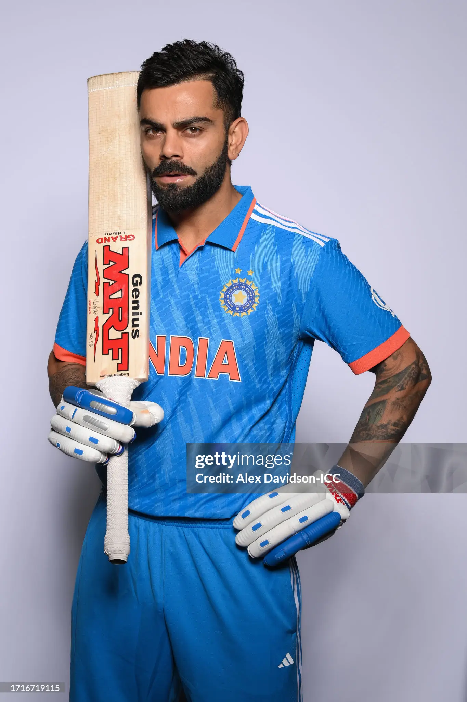

ARCHIVAL RETROSPECTIVE • THE TWILIGHT ERA // ACT V
DEPARTURE HORIZON • 2008—PRESENT
18
ONE LAST CHAPTER
“The twilight has set in. Soon the blue jersey will be folded away, the deafening cheers will turn into memories, and every cover drive we witness today is one less left in our lifetimes.”
THE FAREWELL HORIZON // 2027 FINAL
415
DAYS
09
HOURS
53
MINS
00
SECS
EST. OCT 2027
THE FINAL QUEST // 100 INTERNATIONAL CENTURIES
86
/
100
INTERNATIONAL
CENTURIES
≈30 ESTIMATED REMAINING INDIA ODIs
AN ERA SLIPPING QUIETLY INTO MEMORY.
EVERY INNINGS NOW IS BORROWED TIME.
INDEPENDENT FAN TRIBUTE // NON-COMMERCIAL